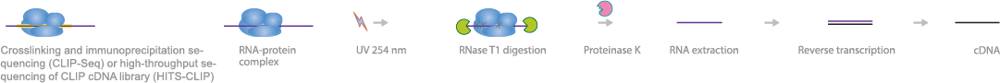
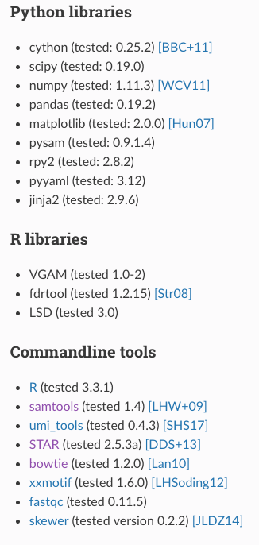

Mockinbirdを用いたPAR-CLIP解析

今回は PAR-CLIP 解析のAll-in-oneパイプラインソフトウェアである、Mockinbirdを紹介します。日本語での情報がほぼなく、説明が長くなってしまいそうなので、２回に分けて書きます。
PAR-CLIPって何？
PAR-CLIPは photoactivatable ribonucleoside-enhanced crosslinking and immunoprecipitation の略でRNAやmicroRNA結合タンパクの結合サイトを特定するために使います。
実験法としては、まず4SU（4-チオウリジン）を細胞培地中に添加し、4SUによるラベル標識を行います。次にUVの照射を行い、RNA結合タンパクとRNAの間で架橋反応を起こします。その後、RBPと結合したリードの抽出を行い、サンプルとして用います。
サンプルRNAを逆転写するときに、4SUがシトシン( C )に置換されます(misread)。そのため、リードがピークを形成し、かつT -> C置換が入っていた場合、RBPと結合していた可能性が高いということになります。これによりあるタンパクが、RNAのどの領域に結合するのか？結合領域間でどのような相互作用があるのかを知ることができます。特に一塩基という高い解像度での解析ができることが特徴です。

Mockinbirdとは？
公式ドキュメント、GitHubに詳細は記載されていますが、日本語での情報が少ない、というか全くない。のでまとめていきたいと思います。
PAR-CLIPの解析は生のFASTQデータから、Quality Check -> Trimming -> Mapping -> Downstream Analysisという流れで行いますが、それらすべての解析をMockinbirdでは一気に行ってくれます。また、MockinbirdModule（詳細は後述）を使うことでmock PAR-CLIP experimentを考慮に入れた解析を行うことができるのも大きな特徴です。
このソフトでは、２つにパイプラインが分かれており、preprocessing phaseとpostprocessing phaseと呼ばれています。タンパク結合サイトの情報が書かれたテーブルを出力するまでが、preprocessing phaseでそれ以降のDownstream解析をpostprocessing phaseと呼んでいます。それぞれにYAMLファイルが用意されており、ユーザーはYAMLファイルで解析したいサンプルデータ、使いたいリファレンスデータ、使いたいモジュール（Mappingの時にSTARやBowtieを選べたりする。）閾値などのパラメータを指定します。最後にコマンドを一行実行するだけで、解析がすべて自動で流れていきます。あるモジュールで出力されたファイルのパスが次のモジュールに自動で設定されていくシステムになっているので、慣れると非常に便利です。
ただ、ドキュメントでも、既存の解析手法に完全に取って代わるものではなく、PAR-CLIP実験のコンディションのトラブルシューティングを再現可能性が高い状態で行なったり、研究の最初の仮説づくりを短時間で行うために使ってもらうことが目的と書かれていました。

環境構築
前置きが長くなりましたが、実際に環境構築から進めていきます。
conda create -n mockinbird -c bioconda -c conda-forge python=3.6 mockinbird
Anacondaでmockinbirdという名前の仮想環境を作ります。mockinbirdが仮想環境にインストールされることになり、これにより、下記のライブラリとツールが環境内で使えるようになります。
source activate mockinbird
でmockinbirdの仮想環境を立ち上げ、
source deactivate mockinbird
で仮想環境を閉じます。
conda remove --all -n mockinbird
で環境を削除します。
git clone https://github.com/soedinglab/mockinbird.git
でgithubからクローンします。
cd mockinbird/mockinbird/data
とディレクトリを進めていくと、preprocess.yaml, postprocess.yamlというファイルがあります。基本はこの二つのYAMLファイルを調整していくことになります。terminalでコマンドを出すときも mockinbird/mockinbird/dataディレクトリで実行するのが個人的にはおすすめです（ファイルの構成が綺麗になる。パスの調整も楽）。
Tutorialデータがドキュメントの方に書かれていましたが、私が見たときはリンクがNotFoundになっていました。ので、私は公式ドキュメントやGitHubを参考にYAMLファイルの調整などを行いました。
preprocess, postprocessの実行のコードは以下のようになっています。
# mockinbird preprocess [parclip_fastq] [output_dir] [prefix] [config_file]
$ mockinbird preprocess nrd1.fastq nrd1 nrd1 preprocess.yaml
# mockinbird postprocess {{genomefasta}} {{output_dir}} {{output_dir}} {{script_dir}}
$ mockinbird postprocess nrd1 nrd1_pp postprocess.yaml
ですが、コードの実行はYAMLの設定ができてからになります。ということでYAMLの中身について説明していきます。
preprocess.yaml
preprocess.yamlの４つの区画から構成されています。
- ① 変数設定。
- ② general. 必須情報の設定。
- ③ reads. リードについての情報。
- ④ pipeline. 使うモジュールと各引数の設定。
① 変数設定 下記のコードはドキュメントから引用していますが、モジュールで使う、ディレクトリの変数化と、mock_processing をFalseに設定しています。（ここ重要！）
{% set data_dir = "data" %}
{% set genome_fasta = data_dir + "/genome.fa" %}
{% set mock_pileup = data_dir + "/mock.mpileup" %}
{% set mock_statistics = data_dir + "/mock_stat.json" %}
{% set norm_pileup = data_dir + "/normalization.mpileup" %}
{% set bowtie_index = data_dir + "/bowtie_index/genome" %}
# setting mock_processing to True will only process the mock. Setting to `False` will run the full
# pipeline
{% set mock_processing = False %}
② general. 必須情報の設定 アダプター配列の指定、リファレンスデータの指定、UMI(Unique molecular identifiers)の有無、スレッド数の指定。
③ reads. リードについての情報 リードの最短長、T -> C mutationの指定
general:
adapter5prime: GTTCAGAGTTCTACAGTCCGACGATC
adapter3prime: TGGAATTCTCGGGTGCCAAGG
genomefasta: {{ genome_fasta }}
normalization_pileup: {{ norm_pileup }}
rmTemp: yes
n_threads: 4
reads:
bc_5prime: 5
bc_3prime: 0
min_len: 20
reference_nucleotide: T
mutation_nucleotide: C
④ pipeline. 使うモジュールと各引数の設定 クオリティチェック -> トリミング -> マッピング
pipeline:
- FastQCModule:
outdir_name: fastQC_raw
- UmiToolsExtractModule
- SkewerAdapterClippingModule
- ClippyAdapterClippingModule:
clipped_5prime_bc: True
- FastQCModule:
outdir_name: fastQC_clipped
genome_index: {{ bowtie_index }}
- BamPPModule:
remove_n_edge_mut: 2
max_mut_per_read: 1
min_mismatch_quality: 20
- SortIndexModule:
keep_all: yes
- UmiToolsDedupModule
- SortIndexModule:
keep_all: yes
- PileupModule:
keep_all: yes
- BamStatisticsModule
MockinbirdModuleを使うことでmock PAR-CLIP experimentを考慮に入れた解析ができますと、すでに書きましたが、Mock Experimentの結果をバックグラウンドとして処理して、PAR-CLIP Experimentの結果を出すことができます。
具体的な方法としては、まず
mock_processing = Trueとし、
mockinbird preprocess nrd1_mock.fastq nrd1_mock nrd1_mock preprocess.yamlを実行します。これで{% if not mock_processing %}までで解析がストップします。
PileupModule, BamStatisticsModuleによって、Mock Experimentの.mpileupファイルと_stat.jsonファイルがそれぞれ生成されます。（この二つのファイルを次に使うことになります。）
次にmock_processing = Falseに戻し、
$ mockinbird preprocess nrd1.fastq nrd1 nrd1 preprocess.yamlを実行します。すると下記のコードも一緒に実行されます。
{% if not mock_processing %}
- PredictionSitesModule:
sites_file: {{ data_dir }}/genome.sites
fasta_file: {{ genome_fasta }}
transition_nucleotide: T
- MockTableModule:
mock_table: {{ data_dir }}/mock.table
mock_pileup: {{ mock_pileup }}
- TransitionTableModule
- LearnMockModule:
mock_model: mock_model/model.pkl
mock_statistics: {{ mock_statistics }}
n_mixture_components: 5
em_iterations: 250
- MockinbirdModule
- NormalizationModule
- QuantileCapModule
{% endif %}
これによって、Mock Experimentの.mpileupファイルと_stat.jsonファイルを受け取りつつ、最終的なCLIP-seqのテーブルを作ることができ、preprocessは終了となります。下記のようなテーブルが出力され、これをもとにpostprocessに進んでいくことになります。
seqid position transitions coverage score strand occupancy posterior
chrI 32601 4 4 6.352710158543762 - 0.15384615384615385 0.772109761967
chrI 35562 4 5 5.292152965717071 + 0.0223463687150838 0.539841709238
chrI 35805 5 5 9.376254703871467 + 0.03184713375796178 0.98585024515
長くなってしまったので、モジュールとpostprocessの説明は次回に回したいと思います。長い間お付き合いいただきありがとうございました。